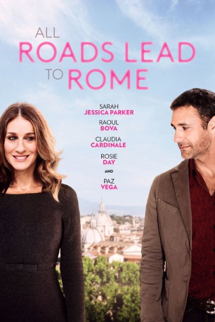

#5501 All Roads Lead to Rome
 
 IMDB-Wertung: 4.8 / 10
IMDB-Wertung: 4.8 / 10  Metascore: 0
Metascore: 0 
Maggie is an uptight, single mother and college writing teacher from New York City. In an effort to reconnect with her troubled teen daughter Summer, she decides to embark on a journey to a Tuscan village that she frequented in her younger days. Upon arrival, Maggie runs into Luca, a handsome former lover who is still a bachelor and lives with his eighty-year-old mother, Carmen. Summer (missing her "bad boy" boyfriend in NYC) and Carmen (secretly planning a wedding against Luca's wishes to Marcelino, her one true love in Rome) impulsively steal Luca's car and race off to Rome. Maggie and Luca quickly pursue allowing the two mismatched couples to spend some time together and develop a new understanding of each other.
Jahr: 2015
Dauer: 87 Minuten
FSK:
Land: Italien Studio: Ambi PicturesTonspuren: DD2.0 - ,
Untertitel:
Auflösung: 1080p (1920x808) Größe: 3389 MB
Genre: Komödie, Liebe
Regisseur: Ella Lemhagen
Drehbuch: Patrick Ness
Soundtrack:
Darsteller:
 Sarah Jessica Parker als Maggie
Sarah Jessica Parker als Maggie- Rosie Day als Summer
 Raoul Bova als Luca
Raoul Bova als Luca Claudia Cardinale als Carmen
Claudia Cardinale als Carmen Paz Vega als Giulia Carni
Paz Vega als Giulia Carni- Marco Bonini als Inspector Moravia
- Walter D'Errico als Romolo
- Gianclaudio Caretta als Orazio
- Chiara Bassermann als Nurse
- Barney Harris als Tyler
- Paola Lavini als Assistant to Giulia
- Nadir Caselli als Valentina
- Shel Shapiro als Marcellino
- Rocío Muñoz als Ermenegilda - The Little Van Girl
- Luis Molteni als Priest
Datei: X:\2015(A-F)\All Roads Lead to Rome (2015, FSK, 1920x808).mkv seit 09.02.2017
Festplatte: HD 2015(A-Z)
 Es gibt insgesamt 143 Filme in der Gruppe '2015(A-F)'
Es gibt insgesamt 143 Filme in der Gruppe '2015(A-F)'